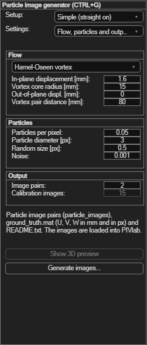

Synthetic particle image generation
Generates synthetic particle image pairs from a known flow field, with the true
displacements in ground_truth.mat — for testing PIV settings against the correct
answer, or for learning how PIV parameters affect the result without real data.
Open via Synthetic particle image generation → Particle image generator (Ctrl+G).

Setup
| Setup | What you get |
|---|---|
| Simple: one camera straight on | The camera looks straight at the light sheet: no perspective, no lens distortion, nothing to calibrate. You set the image size and the pixel size in the sheet (mm per pixel; displacements in mm divided by it are displacements in px). The image pairs are loaded into PIVlab after generating. |
| One camera with lens | A camera with position, aim point, focal length and lens distortion, plus images of the ChArUco board (light sheet position and calibration images) — to test the camera calibration and the rectification. |
| Two cameras (stereo-PIV) | As above for two cameras; the light sheet can be offset and tilted against the board, so the disparity correction has to find it. See Stereo-PIV. Show 3D preview shows the board, the sheet, the cameras and what they see; drag the cameras with the mouse. |
The settings are on two pages (Settings): camera and light sheet, and flow, particles and output. The ChArUco board is the one of Camera calibration → Setup / define / generate marker board.
Flow
The flow is centred in the view (with two cameras: in the overlap of both views). The displacements are given in mm per image pair.
| Flow | Parameters |
|---|---|
| Rankine vortex, Hamel-Oseen vortex | Maximum displacement, core radius, vortex pair distance (0 = one vortex, > 0 = two counter-rotating vortices side by side), out-of-plane displacement. |
| Vortex with out-of-plane jet | A Rankine vortex with a jet through its core (peak out-of-plane displacement) — a test case for stereo-PIV. |
| Uniform displacement, solid body rotation, membrane | Maximum displacement, out-of-plane displacement. |
| Sphere wake, free jet (3D flow simulation) | An unsteady 3D flow is computed (1 to 3 minutes): the wake of a sphere in the light sheet, or a round jet from a nozzle at the left edge of the view (Re 3000; it behaves like a real round jet: potential core about 5 diameters, spreading about 0.09). Parameters: free stream / jet displacement, diameter of the sphere / nozzle, and the time between pairs in D/U (the flow travels this many diameters between two image pairs). Every image pair is a later moment of the flow: a time series. The view must end within 10 jet diameters of the nozzle. |
Particles and output
| Field | Meaning |
|---|---|
| Particles per pixel | Particle image density in each image. |
| Particle diameter, random size [px] | Mean particle image diameter and its variation. |
| Noise | Simulated sensor noise (variance of Gaussian noise). |
| Light sheet thickness [mm] | Particles near the sheet edge are dimmer; with out-of-plane motion some particles leave the sheet between image A and B. |
| Image pairs | Number of image pairs (per camera); calibration images: board images in random positions for the lens calibration (camera setups). |
Generating and using the images
- Click Generate images... and select an output folder.
- Simple setup: the image pairs are loaded into PIVlab — analyze them and compare with
ground_truth.mat:truth.X_px, Y_px, U_px, V_pxare the true positions and displacements in px (sphere and jet: one page per image pair). - Camera setups:
README.txtin the folder describes the files and the workflow (lens calibration, rectification, stereo-PIV, comparison with the ground truth).